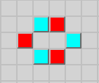

Welcome!
This is a multiplayer version of
John Conway's Game of Life.
Players can edit the grid from their browsers simultaneously, and watch each other's changes
unfold and interact. The game never resets, so you will likely see some remnants of past
civilizations.
This version has "competing species". Each cell takes on the most populous neighboring color.
If multiple colors are tied, one is chosen at random. This adds interesting behavior to
otherwise still lifes. For example, try
drawing a beehive composed of two colors.

Life is normally played on an infinite grid. This version uses a 150 x 150
toroidal grid; the left and right edges are
stitched together, and the top and bottom edges are stitched together.
Looking for inspiration?
GitHub